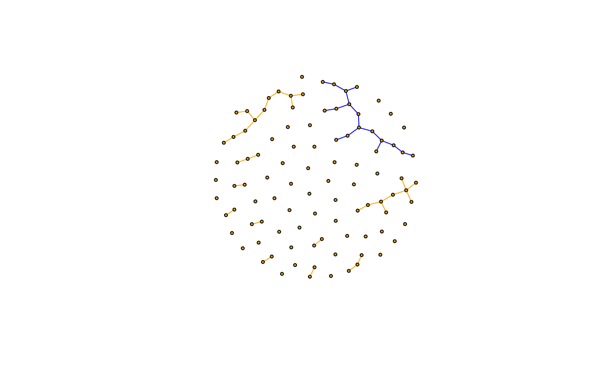

Query or set attributes of the edges in an edge sequence
Source:R/iterators.R
igraph-es-attributes.RdThe $ operator is a syntactic sugar to query and set
edge attributes, for edges in an edge sequence.
Usage
# S3 method for igraph.es
[[(x, i) <- value
# S3 method for igraph.es
[(x, i) <- value
# S3 method for igraph.es
$(x, name)
# S3 method for igraph.es
$(x, name) <- value
E(x, path = NULL, P = NULL, directed = NULL) <- valueArguments
- x
An edge sequence. For
E<-it is a graph.- i
Index.
- value
New value of the attribute, for the edges in the edge sequence.
- name
Name of the edge attribute to query or set.
- path
Select edges along a path, given by a vertex sequence See
E().- P
Select edges via pairs of vertices. See
E().- directed
Whether to use edge directions for the
pathorParguments.
Value
A vector or list, containing the values of the attribute
name for the edges in the sequence. For numeric, character or
logical attributes, it is a vector of the appropriate type, otherwise
it is a list.
Details
The query form of $ is a shortcut for edge_attr(),
e.g. E(g)[idx]$attr is equivalent to edge_attr(g, attr, E(g)[idx]).
The assignment form of $ is a shortcut for
set_edge_attr(), e.g. E(g)[idx]$attr <- value is
equivalent to g <- set_edge_attr(g, attr, E(g)[idx], value).
See also
Other vertex and edge sequences:
E(),
V(),
as_ids(),
igraph-es-indexing,
igraph-es-indexing2,
igraph-vs-attributes,
igraph-vs-indexing,
igraph-vs-indexing2,
print.igraph.es(),
print.igraph.vs()
Other vertex and edge sequences:
E(),
V(),
as_ids(),
igraph-es-indexing,
igraph-es-indexing2,
igraph-vs-attributes,
igraph-vs-indexing,
igraph-vs-indexing2,
print.igraph.es(),
print.igraph.vs()
Examples
# color edges of the largest component
largest_comp <- function(graph) {
cl <- components(graph)
V(graph)[which.max(cl$csize) == cl$membership]
}
g <- sample_(
gnp(100, 1 / 100),
with_vertex_(size = 3, label = ""),
with_graph_(layout = layout_with_fr)
)
giant_v <- largest_comp(g)
E(g)$color <- "orange"
E(g)[giant_v %--% giant_v]$color <- "blue"
plot(g)
